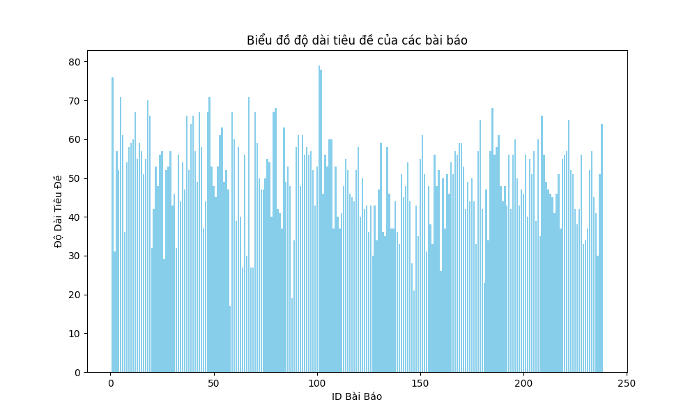

Báo cáo VnExpress
Tổng số bài báo: 238
Biểu đồ độ dài tiêu đề

Danh sách bài báo
| ID | Hình ảnh | Tiêu đề | Mô tả | Link | Danh mục |
|---|---|---|---|---|---|
| 1 |  |
Tổng Bí thư hoan nghênh Việt Nam - Singapore tăng hợp tác về năng lượng xanh | Tổng Bí thư Tô Lâm hoan nghênh và ủng hộ đề xuất hợp tác với Singapore trong lĩnh vực năng lượng xanh và mạng lưới điện xanh trong khu vực, cũng như các lĩnh vực khác. | https://vnexpress.net/tong-bi-thu-hoan-nghenh-viet-nam-singapore-tang-hop-tac-ve-nang-luong-xanh-4866261.html | Trang chủ |
| 2 |  |
Sáp nhập tỉnh, đặt tên thế nào? | Tên gọi mới là gì, người dân cũng sẽ quen, quan trọng hơn là phát triển thế nào sau sáp nhập. | https://vnexpress.net/sap-nhap-tinh-dat-ten-the-nao-vnepre-4866056.html | Trang chủ |
| 3 |  |
Phu nhân Thủ tướng Singapore mặc áo dài, xem múa rối nước | Bà Loo Tze Lui, phu nhân Thủ tướng Singapore Lawrence Wong, mặc áo dài khi cùng bà Ngô Phương Ly, phu nhân Tổng Bí thư Tô Lâm, thưởng thức văn hóa nghệ thuật dân gian Việt Nam. | https://vnexpress.net/phu-nhan-thu-tuong-singapore-mac-ao-dai-xem-mua-roi-nuoc-4866241.html | Trang chủ |
| 4 |  |
Phó thủ tướng yêu cầu xử lý ô nhiễm không khí Hà Nội | Phó thủ tướng Trần Hồng Hà giao các bộ ngành phối hợp với TP Hà Nội xây dựng đề án trình Thủ tướng để xử lý tình trạng ô nhiễm không khí tại Thủ đô. | https://vnexpress.net/pho-thu-tuong-yeu-cau-xu-ly-o-nhiem-khong-khi-ha-noi-4866202.html | Trang chủ |
| 5 |  |
Hiện trường vụ sản xuất ma túy 'tay nghề cao' lớn nhất từ trước đến nay | Khánh HòaKhu xưởng hơn 1.300 m2 được Trương Xuân Minh và nhóm đồng hương Trung Quốc "có kinh nghiệm, tay nghề cao sản xuất ma túy" mở tại Nha Trang để cho ra hàng tấn ketamin. | https://vnexpress.net/hien-truong-vu-san-xuat-ma-tuy-tay-nghe-cao-lon-nhat-tu-truoc-den-nay-vnepre-4866234.html | Trang chủ |
| 6 |  |
Bà Trương Mỹ Lan xin tạo điều kiện khắc phục hậu quả tốt nhất | TP HCMBà Trương Mỹ Lan cho rằng bị buộc 3 tội danh ở giai đoạn hai đại án là không đúng, song xin tòa phúc thẩm tạo điều kiện để khắc phục hậu quả vụ án tốt nhất. | https://vnexpress.net/ba-truong-my-lan-xin-tao-dieu-kien-khac-phuc-hau-qua-tot-nhat-4866243.html | Trang chủ |
| 7 |  |
Ông Trump: Mỹ phải có được Greenland | Tổng thống Trump tái khẳng định Mỹ cần phải kiểm soát Greenland, ngay trước thềm chuyến thăm của Phó tổng thống Vance tới hòn đảo tự trị thuộc Đan Mạch. | https://vnexpress.net/ong-trump-my-phai-co-duoc-greenland-4866320.html | Trang chủ |
| 8 |  |
Kẹt giữa đèo vì quá tự tin vào quãng đường của xe điện | Xuất phát từ chân đèo khi pin còn 22%, chủ xe điện đã kẹt ở đỉnh đèo vì cạn pin, phải gọi xe cứu hộ chở đến chỗ sạc. | https://vnexpress.net/ket-giua-deo-vi-qua-tu-tin-vao-quang-duong-cua-xe-dien-4865902.html | Trang chủ |
| 9 |  |
Dàn diễn viên gây bức xúc khi đi xe cứu thương đến sự kiện | TP HCMĐoàn phim có diễn viên Đại Nghĩa, Bạch Công Khanh gây bức xúc khi dùng xe cứu thương sai mục đích, tối 26/3. | https://vnexpress.net/dan-dien-vien-gay-buc-xuc-khi-di-xe-cuu-thuong-den-su-kien-4866322.html | Trang chủ |
| 10 |  |
Agassi thể hiện tài nghệ pickleball trước khán giả Việt Nam | TP HCM1.200 khán giả thích thú khi tận mắt chứng kiến huyền thoại quần vợt Andre Agassi thi đấu trên sân pickleball, chiều 26/3. | https://vnexpress.net/agassi-the-hien-tai-nghe-pickleball-truoc-khan-gia-viet-nam-4866307.html | Trang chủ |
| 11 |  |
Nga, Ukraine cáo buộc nhau vi phạm thỏa thuận ngừng tập kích | Nga - Ukraine cáo buộc lẫn nhau phá hoại thỏa thuận ngừng tập kích, khi tiến hành các cuộc tấn công quy mô lớn vào hạ tầng năng lượng. | https://vnexpress.net/nga-ukraine-cao-buoc-nhau-vi-pham-thoa-thuan-ngung-tap-kich-4866270.html | Trang chủ |
| 12 |  |
Internet vệ tinh của Musk được 'thí điểm có kiểm soát' tại Việt Nam | Dịch vụ Internet vệ tinh Starlink của SpaceX được thí điểm triển khai trong 5 năm, tối đa 600.000 thuê bao, đảm bảo yêu cầu về quốc phòng, an ninh | https://vnexpress.net/internet-ve-tinh-cua-musk-duoc-thi-diem-co-kiem-soat-tai-viet-nam-4866066.html | Trang chủ |
| 13 |  |
SuperNode của Pi Network bị nghi ngờ tính phi tập trung | Cơ chế xác thực SuperNode gây nghi ngờ về tính phi tập trung của blockchain do vẫn được đội ngũ Pi Network đứng sau kiểm soát. | https://vnexpress.net/supernode-cua-pi-network-bi-nghi-ngo-tinh-phi-tap-trung-4865690.html | Trang chủ |
| 14 |  |
Bộ Nội vụ muốn bảo lưu lương công chức 6 tháng sau sáp nhập | Bộ Nội vụ đề xuất bảo lưu chế độ, tiền lương và phụ cấp chức vụ trong 6 tháng cho cán bộ, công chức, viên chức từ đơn vị hành chính cũ sang làm việc tại các tỉnh, xã sau sáp nhập. | https://vnexpress.net/bo-noi-vu-muon-bao-luu-luong-cong-chuc-6-thang-sau-sap-nhap-4865894.html | Trang chủ |
| 15 |  |
Nga nêu điều kiện kích hoạt thỏa thuận ngừng bắn Biển Đen | Điện Kremlin nói các bên cần xóa bỏ rào cản với xuất khẩu lương thực và phân bón Nga, trước khi có thể kích hoạt thỏa thuận Biển Đen mới. | https://vnexpress.net/nga-neu-dieu-kien-kich-hoat-thoa-thuan-ngung-ban-bien-den-4866249.html | Trang chủ |
| 16 |  |
Điều kiện để Indonesia vào thẳng VCK World Cup 2026 | IndonesiaChiến thắng trước Bahrain giúp Indonesia nuôi hy vọng chiếm vị trí thứ hai của Australia ở bảng C để giành vé chính thức dự World Cup 2026. | https://vnexpress.net/dieu-kien-de-indonesia-vao-thang-vck-world-cup-2026-4865968.html | Trang chủ |
| 17 |  |
Xưởng sản xuất ma túy quy mô lớn nhất nước bị phát hiện | Khánh HòaTrương Xuân Minh với vỏ bọc doanh nhân đã thuê hơn 1.300 m2 đất ở thành phố Nha Trang lắp đặt dây chuyền sản xuất ma túy, cho ra 1,4 tấn ketamin tinh khiết rất cao. | https://vnexpress.net/to-chuc-san-xuat-ma-tuy-cuc-lon-o-nha-trang-bi-triet-pha-4866182.html | Trang chủ |
| 18 |  |
Nhà xã hội tại Thanh Hóa của tỷ phú Phạm Nhật Vượng gần một tỷ mỗi căn | Khu nhà ở xã hội Vinhomes Star City tại Thanh Hoá dự kiến bàn giao tháng 11/2025, có giá bán bình quân tối đa khoảng 20,6 triệu đồng một m2. | https://vnexpress.net/nha-xa-hoi-tai-thanh-hoa-cua-ty-phu-pham-nhat-vuong-gan-mot-ty-moi-can-4866151.html | Trang chủ |
| 19 |  |
Quê hương Tổng thống Zelensky bị tập kích UAV 'lớn chưa từng thấy' | Ukraine nói Nga phóng 117 UAV tập kích nước này, trong đó Kryvyi Rih, quê hương ông Zelensky, bị nhiều phi cơ tấn công nhất từ đầu xung đột. | https://vnexpress.net/que-huong-tong-thong-zelensky-bi-tap-kich-uav-lon-chua-tung-thay-4866193.html | Trang chủ |
| 20 |  |
Giá vàng tăng hơn nửa triệu đồng | Các tiệm kim hoàn hôm nay tăng giá mua vào khoảng 600.000 đồng một lượng, còn bán ra nhích thêm 300.000 đồng, giúp chênh lệch giữa hai chiều thu hẹp. | https://vnexpress.net/moi-luong-vang-tang-vai-tram-ngan-dong-4866080.html | Trang chủ |
| 21 |  |
Thủ tướng Israel dọa chiếm lãnh thổ ở Gaza | Thủ tướng Israel tuyên bố lực lượng nước này sẽ chiếm giữ lãnh thổ ở Dải Gaza nếu Hamas không thả những con tin còn lại. | https://vnexpress.net/thu-tuong-israel-doa-chiem-lanh-tho-o-gaza-4866256.html | Trang chủ |
| 22 |  |
Andre Agassi: 'Tiềm năng pickleball Việt Nam rất lớn' | TP HCMHuyền thoại quần vợt Andre Agassi, từng giành 8 Grand Slam, tiếc vì bây giờ mới được đến Việt Nam nhưng hy vọng sẽ góp phần thúc đẩy phát triển pickleball nơi đây. | https://vnexpress.net/andre-agassi-tiem-nang-pickleball-viet-nam-rat-lon-4866206.html | Trang chủ |
| 23 |  |
Bộ Nội vụ gợi ý cách đặt tên xã mới sau sáp nhập | Bộ Nội vụ khuyến khích các địa phương đặt tên cho xã mới theo tên của huyện cũ kèm theo số thứ tự để dễ dàng quản lý và cập nhật dữ liệu điện tử. | https://vnexpress.net/bo-noi-vu-goi-y-cach-dat-ten-xa-moi-sau-sap-nhap-4865898.html | Trang chủ |
| 24 |  |
Thỏa thuận Biển Đen mới có thể trao thêm lợi ích cho Nga | Lệnh ngừng bắn hạn chế giữa Ukraine và Nga trên Biển Đen sẽ đi kèm đề xuất giúp Moskva thúc đẩy xuất khẩu nông sản và mở khóa cho ngân hàng nước này. | https://vnexpress.net/thoa-thuan-bien-den-moi-co-the-trao-them-loi-ich-cho-nga-4865899.html | Trang chủ |
| 25 | Không có | Tiền vệ Trung Quốc hứng chỉ trích vì đạp cầu thủ Việt Nam | Trung QuốcKuai Jiwen thoát thẻ đỏ, nhưng bị cộng đồng mạng công kích vì cú đạp vào đùi Viktor Le ở hiệp một trận Trung Quốc hòa Việt Nam 1-1 ở giải giao hữu cấp độ U22 CFA China Team 2025. | https://vnexpress.net/tien-ve-trung-quoc-hung-chi-trich-vi-dap-cau-thu-viet-nam-4866086.html | Trang chủ |
| 26 |  |
Thị trấn không rác ở Nhật Bản | Osaki là thị trấn có tỷ lệ tái chế cao nhất Nhật Bản, với 40 loại rác nhựa, nhôm, giấy được phân loại, hướng tới một tương lai không rác thải (zero waste). | https://vnexpress.net/thi-tran-khong-rac-o-nhat-ban-4865734.html | Kinh doanh |
| 27 |  |
Tàu nhà hàng trên sông Sài Gòn bị bán đấu giá thu nợ | https://vnexpress.net/tau-nha-hang-tren-song-sai-gon-bi-ban-dau-gia-thu-no-4866334.html | Kinh doanh | |
| 28 |  |
100% thủ tục liên quan doanh nghiệp sẽ làm trực tuyến | https://vnexpress.net/100-thu-tuc-lien-quan-doanh-nghiep-se-lam-truc-tuyen-4866279.html | Kinh doanh | |
| 29 |  |
Đề xuất giảm 2% thuế thu nhập với doanh nghiệp nhỏ và vừa | https://vnexpress.net/de-xuat-giam-2-thue-thu-nhap-voi-doanh-nghiep-nho-va-vua-4866127.html | Kinh doanh | |
| 30 |  |
TP HCM sẽ giảm 30% thủ tục cho doanh nghiệp | Các sở, ngành đề xuất cắt giảm ít nhất 30% thủ tục hành chính cho doanh nghiệp, theo yêu cầu của Chủ tịch UBND TP HCM. | https://vnexpress.net/tp-hcm-se-giam-30-thu-tuc-cho-doanh-nghiep-4865895.html | Kinh doanh |
| 31 |  |
Hòa Phát đặt mục tiêu doanh thu kỷ lục năm nay | Hòa Phát đặt mục tiêu mang về 170.000 tỷ đồng doanh thu năm nay và trả cổ tức năm 2024 tỷ lệ 20%. | https://vnexpress.net/hoa-phat-dat-muc-tieu-doanh-thu-ky-luc-nam-nay-4866095.html | Kinh doanh |
| 32 | |
Giá vàng tăng hơn nửa triệu đồng | Các tiệm kim hoàn hôm nay tăng giá mua vào khoảng 600.000 đồng một lượng, còn bán ra nhích thêm 300.000 đồng, giúp chênh lệch giữa hai chiều thu hẹp. | https://vnexpress.net/moi-luong-vang-tang-vai-tram-ngan-dong-4866080.html | Kinh doanh |
| 33 |  |
Bộ Tài chính vẫn muốn áp thuế tiêu thụ đặc biệt với xăng | Nhiều đại biểu Quốc hội đề nghị bỏ xăng khỏi diện chịu thuế tiêu thụ đặc biệt, song lãnh đạo Bộ Tài chính lo "bỏ sẽ không khuyến khích dùng tiết kiệm". | https://vnexpress.net/bo-tai-chinh-van-muon-ap-thue-tieu-thu-dac-biet-voi-xang-4866027.html | Kinh doanh |
| 34 |  |
Cổ phiếu ngân hàng, bất động sản bị bán mạnh | Hàng loạt cổ phiếu thuộc nhóm ngân hàng và bất động sản giảm điểm sau nhịp tăng đầu tuần, trong đó nhiều mã như TPB, EIB, DIG, KDH… mất trên 2%. | https://vnexpress.net/co-phieu-ngan-hang-bat-dong-san-bi-ban-manh-4866212.html | Kinh doanh |
| 35 |  |
Mỹ thêm hàng chục công ty Trung Quốc vào danh sách đen | Inspur Group - công ty hàng đầu Trung Quốc về điện toán đám mây và dữ liệu lớn, cùng hơn 50 doanh nghiệp nước này sẽ bị Mỹ hạn chế xuất khẩu. | https://vnexpress.net/my-them-hang-chuc-cong-ty-trung-quoc-vao-danh-sach-den-4865955.html | Kinh doanh |
| 36 |  |
Chuỗi cà phê lớn nhất Việt Nam lãi hơn nghìn tỷ | Highlands Coffee - chuỗi cà phê lớn nhất Việt Nam - có lợi nhuận EBITDA hơn 1.046 tỷ đồng trong năm 2024, tăng 4,5% so với cùng kỳ. | https://vnexpress.net/chuoi-ca-phe-lon-nhat-viet-nam-lai-hon-nghin-ty-4865927.html | Kinh doanh |
| 37 |  |
'Cá mập' PYN Elite Fund: Cổ phiếu công nghệ đang được định giá cao | Quỹ ngoại PYN Elite Fund chốt lời cổ phiếu công nghệ như FPT và CMG vì có giá cao và cảnh báo thị trường về rủi ro bong bóng dotcom. | https://vnexpress.net/ca-map-pyn-elite-fund-co-phieu-cong-nghe-dang-duoc-dinh-gia-cao-4865715.html | Kinh doanh |
| 38 |  |
Lợi thế của Casper Việt Nam trong kinh doanh hè 2025 | Thương hiệu điện máy Thái Lan áp dụng chính sách bảo hành "1 đổi 1" trong một năm, đồng thời ra mắt điều hòa "siêu tiết kiệm điện" tạo lợi thế cạnh tranh thị trường. | https://vnexpress.net/loi-the-cua-casper-viet-nam-trong-kinh-doanh-he-2025-4865647.html | Kinh doanh |
| 39 |  |
Chiến lược giúp Grab tăng trưởng trong giao đồ ăn, đi chợ online | Ba trụ cột gồm người dùng, công nghệ và hệ sinh thái là chiến lược giúp GrabFood và GrabMart tiếp tục hướng đến mục tiêu tăng trưởng bền vững trong năm nay. | https://vnexpress.net/chien-luoc-giup-grab-tang-truong-trong-giao-do-an-di-cho-online-4865779.html | Kinh doanh |
| 40 |  |
Thủ tướng: Việt Nam phấn đấu có thêm 1 triệu doanh nghiệp đến 2030 | Thủ tướng yêu cầu ưu tiên nguồn lực, hỗ trợ phát triển doanh nghiệp nhỏ và vừa, phấn đấu từ nay đến năm 2030 có thêm ít nhất 1 triệu doanh nghiệp. | https://vnexpress.net/thu-tuong-viet-nam-phan-dau-co-them-1-trieu-doanh-nghiep-den-2030-4865839.html | Kinh doanh |
| 41 |  |
Bộ Tài chính tính giảm thuế nhập khẩu ưu đãi ôtô, khí LNG | Bộ Tài chính đề xuất giảm thuế nhập khẩu ưu đãi với một số mặt hàng nhập khẩu như ôtô, gỗ, khí hóa lỏng LNG, sản phẩm nông nghiệp (đùi gà, cherry, táo). | https://vnexpress.net/bo-tai-chinh-tinh-giam-thue-nhap-khau-uu-dai-oto-khi-lng-4865770.html | Kinh doanh |
| 42 |  |
Samsung kêu bị chậm hoàn thuế VAT hơn 580 tỷ đồng | Samsung tại TP HCM cho hay họ còn hơn 582 tỷ đồng tiền thuế VAT cần hoàn trong 3 năm qua, nhưng chưa được cơ quan quản lý giải quyết. | https://vnexpress.net/samsung-keu-bi-cham-hoan-thue-vat-hon-580-ty-dong-4865771.html | Kinh doanh |
| 43 |  |
Kiến nghị lùi thời gian sàn online kê khai, nộp thuế thay người bán | Hiệp hội Thương mại điện tử (Vecom) kiến nghị lùi thời gian các sàn thương mại điện tử phải khấu trừ thuế, nộp thuế thay cho người bán thêm 3 tháng, thay vì từ ngày 1/4. | https://vnexpress.net/kien-nghi-lui-thoi-gian-san-online-ke-khai-nop-thue-thay-nguoi-ban-4865769.html | Kinh doanh |
| 44 |  |
Đề xuất miễn thuế 3 năm cho hộ kinh doanh lên doanh nghiệp | Để khuyến khích hơn 5 triệu hộ kinh doanh chuyển đổi lên doanh nghiệp, các chuyên gia cho rằng nên miễn thuế trong khoảng 3 năm. | https://vnexpress.net/de-xuat-mien-thue-3-nam-cho-ho-kinh-doanh-len-doanh-nghiep-4865706.html | Kinh doanh |
| 45 |  |
VN-Index tăng phiên thứ hai liên tiếp | Dòng tiền trở lại các mã vốn hóa nhỏ giúp VN-Index nối dài mạch tăng lên sát 1.332 điểm, còn khối lượng sang tay bật mạnh lên hơn 1 tỷ cổ phiểu. | https://vnexpress.net/vn-index-tang-phien-thu-hai-lien-tiep-4865732.html | Kinh doanh |
| 46 |  |
Thái Lan chật vật giữ 'ngôi vương' sầu riêng | Sầu riêng Thái Lan xuất sang Trung Quốc giảm, lại bị kiểm tra chất vàng O, buộc nước này gấp rút cải thiện chất lượng, đẩy mạnh chính sách để giữ vững thị trường. | https://vnexpress.net/thai-lan-chat-vat-giu-ngoi-vuong-sau-rieng-4865226.html | Kinh doanh |
| 47 |  |
Vingroup muốn làm loạt dự án điện tái tạo, khí LNG hàng chục tỷ USD | Vingroup đề xuất bổ sung vào Quy hoạch điện VIII điều chỉnh loạt dự án năng lượng tái tạo, điện khí LNG, riêng quy mô đầu tư đến năm 2030 là 25-30 tỷ USD. | https://vnexpress.net/vingroup-muon-lam-loat-du-an-dien-tai-tao-khi-lng-hang-chuc-ty-usd-4865636.html | Kinh doanh |
| 48 |  |
ECB sẽ nhận nhân sự người Việt thực tập về vận hành trung tâm tài chính | Ngân hàng Trung ương châu Âu (ECB) sẽ tiếp nhận nhân sự Việt Nam sang thực tập để học hỏi mô hình vận hành trung tâm tài chính. | https://vnexpress.net/ecb-se-nhan-nhan-su-nguoi-viet-thuc-tap-ve-van-hanh-trung-tam-tai-chinh-4865616.html | Kinh doanh |
| 49 |  |
Loạt công ty chứng khoán đặt mục tiêu lãi lớn năm nay | SSI, SHS, VPS và nhiều công ty chứng khoán khác đặt mục tiêu lãi kỷ lục năm 2025 trong bối cảnh thị trường sôi động trở lại. | https://vnexpress.net/loat-cong-ty-chung-khoan-dat-muc-tieu-lai-lon-nam-nay-4865522.html | Kinh doanh |
| 50 |  |
'Cần quản chặt tài sản mã hóa để chống rửa tiền' | Ủy ban Khoa học, Công nghệ và Môi trường cho biết nên giao Chính phủ quy định và quản lý chặt tài sản mã hóa để tránh bị lợi dụng vào mục đích vi phạm pháp luật. | https://vnexpress.net/can-quan-chat-tai-san-ma-hoa-de-chong-rua-tien-4865504.html | Kinh doanh |
| 51 |  |
Mỡ heo đen Tây Bắc đắt ngang thịt thượng hạng | Với giá bán lẻ 160.000-260.000 đồng một kg (tùy loại), mỡ heo đen Tây Bắc vẫn được các gia đình có thu nhập khá tìm mua. | https://vnexpress.net/mo-heo-den-tay-bac-dat-ngang-thit-thuong-hang-4865142.html | Kinh doanh |
| 52 |  |
Walmart đau đầu trong cuộc chiến thuế quan Mỹ - Trung | Walmart từng nghĩ rằng có thể tận dụng sức mạnh của mình để ép nhà cung cấp Trung Quốc gánh thuế quan, nhưng bất ngờ bị đáp lại bằng câu trả lời là không. | https://vnexpress.net/walmart-dau-dau-trong-cuoc-chien-thue-quan-my-trung-4865305.html | Kinh doanh |
| 53 |  |
Huế sắp có hai nhà máy nghìn tỷ đồng chế biến sản phẩm từ cát | Hai dự án nhà máy chế biến cát thạch anh công nghệ cao và sản xuất kính hoa siêu trắng, tổng vốn hơn 4.000 tỷ đồng được xây dựng tại Khu công nghiệp Phong Điền, TP Huế. | https://vnexpress.net/hue-sap-co-hai-nha-may-nghin-ty-dong-che-bien-san-pham-tu-cat-4865630.html | Kinh doanh |
| 54 |  |
Thế giới Di động lần đầu giảm số cổ phiếu phát hành ưu đãi ESOP | Thế giới Di động sẽ giảm 2 triệu ESOP phát hành cho nhân viên để cân đối hài hòa lợi ích giữa lãnh đạo và cổ đông. | https://vnexpress.net/the-gioi-di-dong-lan-dau-giam-so-co-phieu-phat-hanh-uu-dai-esop-4865528.html | Kinh doanh |
| 55 |  |
Xiaomi huy động gần 5,3 tỷ USD mở rộng kinh doanh | Xiaomi phát hành cổ phiếu nhằm huy động vốn để hỗ trợ cho kế hoạch mở rộng kinh doanh và phát triển công nghệ mới trên toàn cầu. | https://vnexpress.net/xiaomi-huy-dong-gan-5-3-ty-usd-mo-rong-kinh-doanh-4865381.html | Kinh doanh |
| 56 |  |
Ông Trump áp thuế 25% với các nước mua dầu Venezuela | Ngày 24/3, Tổng thống Mỹ công bố sắc lệnh bất kỳ quốc gia nào mua dầu, khí từ Venezuela sẽ chịu thuế nhập khẩu 25% khi bán hàng vào Mỹ. | https://vnexpress.net/ong-trump-ap-thue-25-voi-cac-nuoc-mua-dau-venezuela-4865425.html | Kinh doanh |
| 57 |  |
Người châu Á ngại mua vàng cưới vì giá tăng cao | Do giá tăng cao, một số khách hàng châu Á ngại sắm vàng cưới và chọn phương án như đổi cũ lấy mới hay sắm trọng lượng ít hơn. | https://vnexpress.net/nguoi-chau-a-ngai-mua-vang-cuoi-vi-gia-tang-cao-4865274.html | Kinh doanh |
| 58 |  |
Chỉ số PEG là gì? | Chỉ số PEG cung cấp góc nhìn toàn diện hơn về tiềm năng tăng trưởng của doanh nghiệp mà tỷ lệ P/E thông thường không thể hiện đủ. | https://vnexpress.net/chi-so-peg-la-gi-4861277.html | Kinh doanh |
| 59 |  |
Vinamilk lần đầu áp dụng công nghệ dinh dưỡng thông minh từ châu Âu | Vinamilk áp dụng công nghệ siêu vi lọc từ châu Âu nhằm tinh chỉnh tỷ lệ đạm, canxi, lactose trong sữa tươi bằng phương pháp vật lý, giúp người dùng quyết định dinh dưỡng theo nhu cầu. | https://vnexpress.net/vinamilk-lan-dau-ap-dung-cong-nghe-dinh-duong-thong-minh-tu-chau-au-4865472.html | Kinh doanh |
| 60 |  |
Hanwha Life đẩy mạnh tài trợ cuộc thi về công nghệ thông tin | Doanh nghiệp hai lần liên tiếp tài trợ chương trình Olympic Tin học miền Trung - Tây Nguyên, nhằm thúc đẩy phát triển AI và công nghệ. | https://vnexpress.net/hanwha-life-day-manh-tai-tro-cuoc-thi-ve-cong-nghe-thong-tin-4865566.html | Kinh doanh |
| 61 |  |
HDBank tiếp tục hạ lãi suất vay mua nhà | HDBank ưu đãi lãi suất từ 3,5% một năm cho khách hàng vay mua nhà độ tuổi 18-35, thời hạn vay đến 50 năm, ân hạn gốc tối đa 5 năm. | https://vnexpress.net/hdbank-tiep-tuc-ha-lai-suat-vay-mua-nha-4865486.html | Kinh doanh |
| 62 |  |
Fundiin 'bắt tay' Visa nâng cấp mô hình chấm điểm tín dụng | Fundiin hợp tác chiến lược với Visa nâng cấp mô hình chấm điểm tín dụng theo chuẩn quốc tế, nhằm nâng cao năng lực quản trị rủi ro và mở rộng khả năng tiếp cận tài chính cho người tiêu dùng. | https://vnexpress.net/fundiin-bat-tay-visa-nang-cap-mo-hinh-cham-diem-tin-dung-4865309.html | Kinh doanh |
| 63 |  |
Xuất khẩu rau quả giảm 3 tháng liên tiếp | Xuất khẩu rau quả cả nước tháng 3 ước đạt 421 triệu USD, giảm 10,5% so với cùng kỳ năm ngoái - là tháng giảm thứ 3 liên tiếp. | https://vnexpress.net/xuat-khau-rau-qua-giam-3-thang-lien-tiep-4865363.html | Kinh doanh |
| 64 |  |
Hãng xe điện BYD lãi kỷ lục | Hãng xe điện Trung Quốc lãi ròng hơn 2 tỷ USD trong quý trước, ngày càng hưởng lợi nhờ chính sách giá rẻ. | https://vnexpress.net/hang-xe-dien-byd-lai-ky-luc-4865360.html | Kinh doanh |
| 65 |  |
Một doanh nghiệp ở châu Phi muốn mua hơn 2.100 container | Một công ty châu Phi vừa mở thầu mua 2.136 container, mở ra cơ hội cho doanh nghiệp Việt Nam tham gia thương vụ này. | https://vnexpress.net/mot-doanh-nghiep-o-chau-phi-muon-mua-hon-2-100-container-4865370.html | Kinh doanh |
| 66 |  |
Fed lỗ lớn năm thứ 2 liên tiếp | Cuối tuần trước, Cục Dự trữ liên bang Mỹ (Fed) công bố số liệu cho thấy khoản lỗ hoạt động của cơ quan này năm ngoái là 77,6 tỷ USD. | https://vnexpress.net/fed-lo-lon-nam-thu-2-lien-tiep-4865257.html | Kinh doanh |
| 67 |  |
150 nhà máy nhiệt điện, xi măng dự kiến được phân bổ hạn ngạch khí thải | Các nhà máy điện than, thép, xi măng có thể được phân bổ hạn ngạch khí thải trong 2025-2026, chiếm khoảng 40% tổng khí thải cả nước. | https://vnexpress.net/150-nha-may-nhiet-dien-xi-mang-du-kien-duoc-phan-bo-han-ngach-khi-thai-4865268.html | Kinh doanh |
| 68 |  |
Giá USD ngân hàng tăng mạnh | Mỗi USD trong ngân hàng tăng hơn 60 đồng lên vùng 25.800 đồng, mức cao nhất từ trước đến nay. | https://vnexpress.net/gia-usd-ngan-hang-tang-manh-4865247.html | Kinh doanh |
| 69 |  |
Cổ phiếu Vingroup chạm trần | VIC có phiên tăng trần thứ hai trong vòng nửa tháng cùng khối lượng khớp lệnh đột biến, giúp VN-Index đảo chiều từ giảm thành tăng gần 9 điểm. | https://vnexpress.net/co-phieu-vingroup-cham-tran-4865256.html | Kinh doanh |
| 70 |  |
Đồng TRUMP tăng vọt khi Tổng thống Mỹ khen 'tốt nhất trong tiền số' | Meme coin chính thức của Tổng thống Donald Trump tăng 12% sau bài đăng khen ngợi của ông rằng đây là loại tốt nhất trong thị trường tiền số. | https://vnexpress.net/dong-trump-tang-vot-khi-tong-thong-my-khen-tot-nhat-trong-tien-so-4865175.html | Kinh doanh |
| 71 |  |
Đề xuất giảm 2% thuế VAT với xăng dầu, máy giặt, lò vi sóng | Bộ Tài chính đề xuất mở rộng diện giảm 2% thuế VAT với xăng dầu, máy giặt, lò vi sóng và kéo dài chính sách ưu đãi này tới hết năm 2026. | https://vnexpress.net/de-xuat-giam-2-thue-vat-voi-xang-dau-may-giat-lo-vi-song-4865202.html | Kinh doanh |
| 72 |  |
Lãnh đạo Phát Đạt nói về vụ thao túng giá cổ phiếu | Một nhà đầu tư thao túng giá cổ phiếu từng là kế toán trưởng công ty, nhưng lãnh đạo Phát Đạt cho biết "không liên quan gì tới các hoạt động này". | https://vnexpress.net/lanh-dao-phat-dat-noi-ve-vu-thao-tung-gia-co-phieu-4865195.html | Kinh doanh |
| 73 |  |
Giới chức Trung Quốc trấn an doanh nghiệp ngoại | Các lãnh đạo cấp cao Trung Quốc liên tiếp gặp gỡ CEO nước ngoài trong bối cảnh căng thẳng thương mại leo thang, đặc biệt với Mỹ. | https://vnexpress.net/gioi-chuc-trung-quoc-tran-an-doanh-nghiep-ngoai-4865041.html | Kinh doanh |
| 74 |  |
Công ty lâu đời nhất Canada gặp khó sau 350 năm | Thành lập năm 1670, nhà bán lẻ Hudson’s Bay chuẩn bị đóng cửa hơn 90% số cửa hàng do khó khăn tài chính nghiêm trọng. | https://vnexpress.net/cong-ty-lau-doi-nhat-canada-gap-kho-sau-350-nam-4864824.html | Kinh doanh |
| 75 |  |
Nông dân Đăk Lăk học làm than sinh học từ vỏ cacao | Nông dân tại EaKar, huyện trồng cacao lớn nhất Đăk Lăk, đang thí điểm làm than sinh học từ phụ phẩm cacao để hướng tới bán tín chỉ carbon. | https://vnexpress.net/nong-dan-dak-lak-hoc-lam-than-sinh-hoc-tu-vo-cacao-4862400.html | Kinh doanh |
| 76 |  |
SuperNode của Pi Network bị nghi ngờ tính phi tập trung | https://vnexpress.net/supernode-cua-pi-network-bi-nghi-ngo-tinh-phi-tap-trung-4865690.html | Công nghệ | |
| 77 |  |
Nền tảng 'Bình dân học vụ số' phổ cập về chuyển đổi số | https://vnexpress.net/nen-tang-binh-dan-hoc-vu-so-pho-cap-ve-chuyen-doi-so-4866208.html | Công nghệ | |
| 78 |  |
ChatGPT thêm khả năng tạo ảnh 'như thật' | https://vnexpress.net/chatgpt-them-kha-nang-tao-anh-nhu-that-4866175.html | Công nghệ | |
| 79 | |
Internet vệ tinh của Musk được 'thí điểm có kiểm soát' tại Việt Nam | https://vnexpress.net/internet-ve-tinh-cua-musk-duoc-thi-diem-co-kiem-soat-tai-viet-nam-4866066.html | Công nghệ | |
| 80 |  |
Diễn đàn công nghệ VOZ thông báo ngừng hoạt động với người dùng Việt | https://vnexpress.net/dien-dan-cong-nghe-voz-thong-bao-ngung-hoat-dong-voi-nguoi-dung-viet-4866013.html | Công nghệ | |
| 81 |  |
MobiFone triển khai 5G, giá từ 80.000 đồng | https://vnexpress.net/mobifone-trien-khai-5g-gia-tu-80-000-dong-4865911.html | Công nghệ | |
| 82 |  |
Những bước tiến trong hạ tầng số Việt Nam | https://vnexpress.net/nhung-buoc-tien-trong-ha-tang-so-viet-nam-4865390.html | Công nghệ | |
| 83 |  |
iOS 19 'đại tu' thiết kế, ra ngày 9/6 | iOS 19 cùng loạt hệ điều hành mới sẽ được Apple giới thiệu tại WWDC 2025 bắt đầu từ ngày 9/6 tới. | https://vnexpress.net/ios-19-dai-tu-thiet-ke-ra-ngay-9-6-4865913.html | Công nghệ |
| 84 |  |
Nhà sáng lập Signal chế giễu 'thảm họa' chat nhóm của Nhà Trắng | Moxie Marlinspike, đồng sáng lập Signal, đăng thông điệp giễu cợt sau khi chính phủ Mỹ mời nhầm nhà báo vào nhóm chat mật trên ứng dụng nhắn tin này. | https://vnexpress.net/nha-sang-lap-signal-che-gieu-tham-hoa-chat-nhom-cua-nha-trang-4865871.html | Công nghệ |
| 85 |  |
TCL giới thiệu mẫu máy lạnh mô phỏng gió tự nhiên | TCL ra mắt mẫu máy lạnh BreezeIN Pro với các tính năng AI, công nghệ Gentle Cool tạo luồng khí dịu nhẹ, mô phỏng gió trời, tạo sự dễ chịu cho người dùng. | https://vnexpress.net/tcl-gioi-thieu-mau-may-lanh-mo-phong-gio-tu-nhien-4863825.html | Công nghệ |
| 86 |  |
Bản ghi 'JD Vance nói xấu Musk' phơi bày nạn deepfake | Bản ghi Phó tổng thống Mỹ JD Vance nhận xét Musk "đang hóa thân thành lãnh đạo vĩ đại của nước Mỹ" cho thấy âm thanh AI ngày càng khó phát hiện. | https://vnexpress.net/ban-ghi-jd-vance-noi-xau-musk-phoi-bay-nan-deepfake-4865555.html | Công nghệ |
| 87 |  |
Đề xuất dán nhãn sản phẩm công nghệ do AI tạo ra | Sản phẩm công nghệ số được tạo bởi trí tuệ nhân tạo với mục đích tương tác trực tiếp với con người phải có dấu hiệu nhận dạng, theo dự thảo Luật Công nghiệp công nghệ số. | https://vnexpress.net/de-xuat-dan-nhan-san-pham-cong-nghe-do-ai-tao-ra-4865540.html | Công nghệ |
| 88 |  |
CEO Samsung qua đời | Samsung ngày 25/3 thông báo ông Han Jong-hee, giữ chức đồng Giám đốc điều hành công ty, qua đời vì ngừng tim, ở tuổi 63. | https://vnexpress.net/ceo-samsung-qua-doi-4865449.html | Công nghệ |
| 89 | Không có | Robot hình người chuẩn bị bữa sáng | Atom, robot hình người của Dobot (Trung Quốc) có thể tự làm bữa sáng, phần nào cho thấy cách chúng sẽ phục vụ con người trong tương lai. | https://vnexpress.net/robot-hinh-nguoi-chuan-bi-bua-sang-4865101.html | Công nghệ |
| 90 |  |
Mở đăng ký chương trình tìm kiếm dự án game tiềm năng 2025 | GameHub 2025 mở đăng ký cho các sản phẩm game Việt, mang đến cơ hội nhận đầu tư từ các đơn vị đầu ngành. | https://vnexpress.net/mo-dang-ky-chuong-trinh-tim-kiem-du-an-game-tiem-nang-2025-4865556.html | Công nghệ |
| 91 |  |
Các hạng mục nhiều bình chọn tại Vietnam Game Awards tuần đầu | Vietnam Game Awards 2025 đang thu hút gần 70.000 lượt bình chọn sau bốn ngày mở cổng, nhất là ở hạng mục cộng đồng và game vượt thời gian. | https://vnexpress.net/cac-hang-muc-nhieu-binh-chon-tai-vietnam-game-awards-tuan-dau-4865204.html | Công nghệ |
| 92 |  |
Chi 1.400 USD thuê robot hình người làm việc nhà | Trung QuốcZhang Genyuan, 25 tuổi, thuê robot hình người Unitree G1 và yêu cầu nó nấu ăn, dọn dẹp và đi dạo. | https://vnexpress.net/chi-1-400-usd-thue-robot-hinh-nguoi-lam-viec-nha-4864999.html | Công nghệ |
| 93 |  |
Redmi Note 14 Pro+ 5G - điện thoại AI tầm trung cấu hình mạnh | Redmi Note 14 Pro+ 5G có nhiều tính năng AI hữu dụng về chỉnh sửa ảnh, văn bản, dịch thuật cùng cấu hình mạnh nhưng thiếu sạc không dây. | https://vnexpress.net/redmi-note-14-pro-5g-dien-thoai-ai-tam-trung-cau-hinh-manh-4862968.html | Công nghệ |
| 94 |  |
ChatGPT có thể khiến người sử dụng nhiều cảm thấy cô đơn | Các nhà nghiên cứu nhận thấy AI, giống như mạng xã hội, đang trở thành một trong những công nghệ đẩy người dùng về hai thái cực cảm xúc. | https://vnexpress.net/chatgpt-co-the-khien-nguoi-su-dung-nhieu-cam-thay-co-don-4864941.html | Công nghệ |
| 95 |  |
Thêm phương án đấu giá băng tần 5G nếu một đơn vị tham gia | Bộ Khoa học và Công nghệ thông báo đấu giá khối băng tần 700 MHz, trong đó thêm phương án xử lý nếu chỉ một đơn vị tham gia. | https://vnexpress.net/them-phuong-an-dau-gia-bang-tan-5g-neu-mot-don-vi-tham-gia-4865118.html | Công nghệ |
| 96 | Không có | Robot hình người đầu tiên trên thế giới có thể 'bật tôm' | Robot hình người Unitree G1 lần đầu thực hiện được động tác "bật tôm" như con người cùng khả năng giữ thăng bằng khi bị đạp từ phía sau, múa võ Thái cực quyền. | https://vnexpress.net/robot-hinh-nguoi-dau-tien-tren-the-gioi-co-the-bat-tom-4864778.html | Công nghệ |
| 97 |  |
CEO OpenAI: Lập trình viên phải học dùng AI hoặc mất việc | Giám đốc điều hành OpenAI Sam Altman ước tính AI đang thực hiện tới 50% công việc lập trình trong một số công ty khiến nhu cầu lập trình viên giảm mạnh. | https://vnexpress.net/ceo-openai-lap-trinh-vien-phai-hoc-dung-ai-hoac-mat-viec-4864761.html | Công nghệ |
| 98 |  |
Hàng nghìn iPhone bị đánh cắp trước hiên nhà thế nào | MỹBằng cách dùng phần mềm thu thập vị trí, nhóm tội phạm đã đánh cắp hàng nghìn gói hàng bên trong chứa iPhone được đặt trước hiên nhà. | https://vnexpress.net/hang-nghin-iphone-bi-danh-cap-truoc-hien-nha-the-nao-4863957.html | Công nghệ |
| 99 |  |
AI đang 'kéo lùi sự tiến bộ của smartphone' | Các hãng smartphone hiện chạy đua tích hợp AI, coi công nghệ này là sự khác biệt trên sản phẩm, nhưng thực tế ứng dụng của chúng còn hạn chế. | https://vnexpress.net/ai-dang-keo-lui-su-tien-bo-cua-smartphone-4861912.html | Công nghệ |
| 100 |  |
Apple lỗ hơn một tỷ USD mỗi năm để cạnh tranh Netflix | Dịch vụ Apple TV+ đang lỗ hơn một tỷ USD mỗi năm do đầu tư nhiều vào nội dung để cạnh tranh với Netflix. | https://vnexpress.net/apple-lo-hon-mot-ty-usd-moi-nam-de-canh-tranh-netflix-4864672.html | Công nghệ |
| 101 |  |
Thiếu tướng Nguyễn Ngọc Cương: 'Chúng tôi muốn dữ liệu hóa nền kinh tế, xã hội' | Thiếu tướng Nguyễn Ngọc Cương, Phó chủ tịch Hiệp hội Dữ liệu Quốc gia, cho biết đơn vị muốn "dữ liệu hóa" nền kinh tế, xã hội, tức đưa dữ liệu vào mọi lĩnh vực trong đời sống. | https://vnexpress.net/thieu-tuong-nguyen-ngoc-cuong-chung-toi-muon-du-lieu-hoa-nen-kinh-te-xa-hoi-vnepre-4864099.html | Công nghệ |
| 102 |  |
Tổng Bí thư Tô Lâm: Hiệp hội Dữ liệu Quốc gia là ngôi nhà chung của hiệp sĩ số | Tại lễ ra mắt Hiệp hội Dữ liệu Quốc gia, Tổng Bí thư Tô Lâm gọi đây là "ngôi nhà chung của các hiệp sĩ số" và "ngọn cờ tiên phong" trong việc thực hiện Nghị quyết 57. | https://vnexpress.net/tong-bi-thu-to-lam-hiep-hoi-du-lieu-quoc-gia-la-ngoi-nha-chung-cua-hiep-si-so-4864479.html | Công nghệ |
| 103 |  |
iPhone gập có thể sử dụng bản lề kim loại lỏng | Nhà phân tích nổi tiếng Ming-Chi Kuo cho biết Apple sẽ sử dụng kim loại lỏng làm bản lề cho iPhone gập để cải thiện độ bền và phẳng của màn hình. | https://vnexpress.net/iphone-gap-co-the-su-dung-ban-le-kim-loai-long-4864397.html | Công nghệ |
| 104 |  |
Nhiều người chơi thất vọng khi giá Pi xuống dưới một USD | Nhiều người cho biết cảm thấy lo lắng do tài khoản "chia đôi" sau khi mua thêm Pi, số khác thất vọng vì giá không như mong đợi. | https://vnexpress.net/nhieu-nguoi-choi-that-vong-khi-gia-pi-xuong-duoi-mot-usd-4864234.html | Công nghệ |
| 105 |  |
Xiaomi Watch S4 - smartwatch 4 triệu đồng pin 15 ngày | Đồng hồ thông minh Xiaomi Watch S4 chạy HyperOS 2 tương thích đa nền tảng, hỗ trợ tốt cho việc đo sức khoẻ, tập thể thao và thời lượng pin lâu. | https://vnexpress.net/xiaomi-watch-s4-smartwatch-4-trieu-dong-pin-15-ngay-4864405.html | Công nghệ |
| 106 |  |
FPT giới thiệu camera có nút bấm đa năng, đàm thoại chủ động | Tính năng đàm thoại chủ động với nút bấm đa năng tích hợp trên camera Play 4, ra mắt cùng mẫu IQ 4S, lên kệ từ đầu năm 2025. | https://vnexpress.net/fpt-gioi-thieu-camera-co-nut-bam-da-nang-dam-thoai-chu-dong-4864358.html | Công nghệ |
| 107 |  |
CEO Nvidia: 'Cách mạng robot hình người gần hơn tưởng tượng' | Jensen Huang, CEO Nvidia, tin trong vòng chưa đầy 5 năm nữa, robot hình người sẽ được sử dụng rộng rãi, "lang thang quanh bạn". | https://vnexpress.net/ceo-nvidia-cach-mang-robot-hinh-nguoi-gan-hon-tuong-tuong-4863674.html | Công nghệ |
| 108 |  |
Chó robot tập đi đứng nhờ 'bộ não AI' | Robot chó của IntuiCell (Thụy Điển) được trang bị não AI mới, mở ra giai đoạn về khả năng tự học, tự thích nghi như sinh vật sống. | https://vnexpress.net/cho-robot-tap-di-dung-nho-bo-nao-ai-4864054.html | Công nghệ |
| 109 |  |
'Công chúa út' Huawei quảng bá smartphone gập dáng lạ | Annabel Yao, con gái nhà sáng lập Huawei Nhậm Chính Phi, tham gia quảng bá cho smartphone gập Pura X mới ra mắt của hãng. | https://vnexpress.net/cong-chua-ut-huawei-quang-ba-smartphone-gap-dang-la-4863941.html | Công nghệ |
| 110 |  |
Nhà sáng lập hệ thống Mai Nguyên qua đời | Ông Mai Triều Nguyên - nhà sáng lập hệ thống bán lẻ điện thoại, âm thanh, đồ chơi công nghệ Mai Nguyên - qua đời ở tuổi 49 tại Australia. | https://vnexpress.net/nha-sang-lap-he-thong-mai-nguyen-qua-doi-4864382.html | Công nghệ |
| 111 |  |
Apple phát triển đồng hồ màn hình gập | Apple nộp đơn xin cấp bằng sáng chế cho mẫu đồng hồ có màn hình gập, tiến tới hoạt động độc lập với iPhone. | https://vnexpress.net/apple-phat-trien-dong-ho-man-hinh-gap-4863955.html | Công nghệ |
| 112 |  |
'Ma trận' TV công nghệ chấm lượng tử QLED | Chấm lượng tử (Quantum Dot) xuất hiện trên hầu hết TV cận cao cấp và cao cấp với ưu điểm về dải màu rộng, nhưng có sự khác biệt giữa các hãng. | https://vnexpress.net/ma-tran-tv-cong-nghe-cham-luong-tu-qled-4863494.html | Công nghệ |
| 113 |  |
Người dùng Hà Nội trải nghiệm độ bền Oppo A5 Pro | Oppo giới thiệu khả năng kháng nước, hoạt động bên bỉ kể cả khi đông đá của Oppo A5 Pro qua hoạt động trải nghiệm tại Aeon Mall Hà Đông, ngày 15-16/3. | https://vnexpress.net/nguoi-dung-ha-noi-trai-nghiem-do-ben-oppo-a5-pro-4863442.html | Công nghệ |
| 114 |  |
Mở cổng bình chọn vòng Sơ loại Vietnam Game Awards 2025 | Độc giả có thể tham gia bình chọn vòng Sơ loại cho 230 đề cử ở 23 hạng mục giải thưởng để chọn ra những đại diện xuất sắc vào Chung kết. | https://vnexpress.net/mo-cong-binh-chon-vong-so-loai-vietnam-game-awards-2025-4862160.html | Công nghệ |
| 115 |  |
iPhone sắp mất vị thế 'quân bài chủ lực' với Foxconn | Foxconn, nhà sản xuất iPhone lớn nhất thế giới, cho biết máy chủ AI sẽ trở thành danh mục mang doanh thu nhiều nhất cho công ty trong 1-2 năm tới. | https://vnexpress.net/iphone-sap-mat-vi-the-quan-bai-chu-luc-voi-foxconn-4863596.html | Công nghệ |
| 116 |  |
OpenAI ra o1-Pro - mô hình AI lý luận đắt nhất | OpenAI o1-Pro là phiên bản nâng cấp của o1, nhưng người dùng phải trả tiền cao gấp 10 lần so với bản hiện tại. | https://vnexpress.net/openai-ra-o1-pro-mo-hinh-ai-ly-luan-dat-nhat-4863567.html | Công nghệ |
| 117 |  |
Internet di động Việt Nam vào top 20 thế giới | Tốc độ Internet di động tại Việt Nam tiếp tục tăng nhanh lên 144 Mbps, gần bằng mạng cố định và lần đầu vào top 20 thế giới. | https://vnexpress.net/internet-di-dong-viet-nam-vao-top-20-the-gioi-4863493.html | Công nghệ |
| 118 |  |
AI đang tác động đến công việc của những ai? | Nhiếp ảnh gia, biên dịch viên, bác sĩ gia đình nằm trong nhóm công việc AI đang tác động theo cả chiều hướng tốt và xấu. | https://vnexpress.net/ai-dang-tac-dong-den-cong-viec-cua-nhung-ai-4862346.html | Công nghệ |
| 119 |  |
Hoàng Thùy Linh: 'Tôi đối diện và chuyển hóa nỗi sợ' | Hoàng Thùy Linh đối diện nỗi sợ sau mỗi lần va vấp, nhưng rồi học cách thay đổi, chuyển hóa thành năng lượng bình yên. | https://vnexpress.net/hoang-thuy-linh-toi-doi-dien-va-chuyen-hoa-noi-so-4865912.html | Giải trí |
| 120 |  |
Dàn diễn viên gây bức xúc khi đi xe cứu thương đến sự kiện | TP HCMĐoàn phim có diễn viên Đại Nghĩa, Bạch Công Khanh gây bức xúc khi dùng xe cứu thương sai mục đích, tối 26/3. | https://vnexpress.net/dan-dien-vien-gay-buc-xuc-khi-di-xe-cuu-thuong-den-su-kien-4866322.html | Giải trí |
| 121 |  |
Nghệ sĩ ngâm thơ Vũ Thị Kim Dung qua đời | ''Giọng ngâm thơ vàng'' Kim Dung qua đời ở Praha, Cộng hòa Czech sau thời gian dài chống chọi ung thư, hưởng thọ 80 tuổi. | https://vnexpress.net/nghe-si-ngam-tho-vu-thi-kim-dung-qua-doi-4866299.html | Giải trí |
| 122 |  |
Người đẹp Quảng Trị gây chú ý tại Hoa hậu Việt Nam | https://vnexpress.net/nguoi-dep-quang-tri-gay-chu-y-tai-hoa-hau-viet-nam-4866228.html | Giải trí | |
| 123 |  |
'Gặp nhau cuối tuần' đổi mới gây tranh cãi | https://vnexpress.net/gap-nhau-cuoi-tuan-doi-moi-gay-tranh-cai-4861183.html | Giải trí | |
| 124 |  |
Võ Hoài Nam: 'Tôi và vợ tận hưởng hôn nhân' | https://vnexpress.net/vo-hoai-nam-toi-va-vo-tan-huong-hon-nhan-4865279.html | Giải trí | |
| 125 |  |
Tạp chí Nhật phát hành truyện của AI | https://vnexpress.net/tap-chi-nhat-phat-hanh-truyen-cua-ai-4866140.html | Giải trí | |
| 126 |  |
Vợ diễn viên Công Lý phối đồ với 5 túi hiệu | Ngọc Hà - vợ diễn viên Công Lý - gợi ý các cách phối đồ đi làm, dự tiệc với túi Chanel, Dior, Louis Vuitton. | https://vnexpress.net/vo-dien-vien-cong-ly-phoi-do-voi-5-tui-hieu-4865838.html | Giải trí |
| 127 |  |
Tiểu Vy diễn kịch về Quảng Nam | Hoa hậu Tiểu Vy tham gia vở kịch về tình yêu quê hương tại Lễ kỷ niệm 50 năm Ngày giải phóng tỉnh Quảng Nam. | https://vnexpress.net/tieu-vy-dien-kich-ve-quang-nam-4866026.html | Giải trí |
| 128 |  |
Ben Affleck nói về vụ ly hôn Jennifer Lopez | Tài tử Ben Affleck khẳng định vẫn tôn trọng Jennifer Lopez sau khi cả hai chia tay. | https://vnexpress.net/ben-affleck-noi-ve-vu-ly-hon-jennifer-lopez-4865948.html | Giải trí |
| 129 |  |
Hôn nhân ngọt ngào của Chân Tử Đan | Diễn viên Hong Kong Chân Tử Đan thường tạo bất ngờ cho Uông Thi Thi, còn cô khen và nói lời yêu bạn đời. | https://vnexpress.net/hon-nhan-ngot-ngao-cua-chan-tu-dan-4866126.html | Giải trí |
| 130 |  |
Gu mặc đời thường của bạn gái Leonardo DiCaprio | Siêu mẫu Vittoria Ceretti - bạn gái tài tử Leonardo DiCaprio - thường diện trang phục mang hơi hướng nam tính. | https://vnexpress.net/gu-mac-doi-thuong-cua-ban-gai-leonardo-dicaprio-4865534.html | Giải trí |
| 131 |  |
Đạo diễn phim nỗ lực tái hiện thế giới trò chơi 'Minecraft' | Đạo diễn Jared Hess nói cố gắng giữ vững tinh thần của trò chơi kinh điển về sinh tồn "Minecraft" khi chuyển thể thành phim điện ảnh. | https://vnexpress.net/dao-dien-phim-no-luc-tai-hien-the-gioi-tro-choi-minecraft-4864445.html | Giải trí |
| 132 |  |
Nghệ sĩ Thanh Tuấn nhập viện cấp cứu | TP HCMNghệ sĩ cải lương Thanh Tuấn - nổi tiếng với "Đường gươm Nguyên Bá", "Lưu Bình - Dương Lễ" - nguy kịch vì bệnh tim. | https://vnexpress.net/nghe-si-thanh-tuan-nhap-vien-cap-cuu-4866001.html | Giải trí |
| 133 |  |
Kim Soo Hyun hủy sự kiện ở Đài Loan | Tài tử Hàn Kim Soo Hyun hủy kế hoạch biểu diễn tại lễ hội hoa ở Đài Loan, trong bối cảnh đời tư gây chú ý. | https://vnexpress.net/kim-soo-hyun-huy-su-kien-o-dai-loan-4865940.html | Giải trí |
| 134 |  |
Cẩm Vân: 'Tôi không thể hát sai nhạc Trịnh, dù chỉ một từ' | Cẩm Vân từng sang Mỹ sửa lỗi sai một từ trong "Người già và em bé" của Trịnh Công Sơn dù album đã thu xong. | https://vnexpress.net/cam-van-toi-khong-the-hat-sai-nhac-trinh-du-chi-mot-tu-4865814.html | Giải trí |
| 135 |  |
'Ban mai thơm mắt nắng' - bản hòa ca cuộc sống | Tác giả Vũ Trần Anh Thư khắc họa cảnh sắc vùng miền, tri ân tình yêu của cha mẹ trong tập thơ "Ban mai thơm mắt nắng". | https://vnexpress.net/ban-mai-thom-mat-nang-ban-hoa-ca-cuoc-song-4865625.html | Giải trí |
| 136 |  |
Bộ đôi Thụy Sĩ đến Việt Nam biểu diễn | Nghệ sĩ Sophie de Quay và chồng - Simon Jaccard - sẽ trình diễn trong show ''Nhịp cầu gắn kết'', tại công viên Thống Nhất, Hà Nội, tối 29/3. | https://vnexpress.net/bo-doi-thuy-si-den-viet-nam-bieu-dien-4865696.html | Giải trí |
| 137 |  |
Phong cách năng động của Hiếu Thứ Hai | Rapper Hiếu Thứ Hai, 26 tuổi, ghi điểm qua những bộ cánh pha trộn chất hip hop và thời trang cao cấp. | https://vnexpress.net/phong-cach-nang-dong-cua-hieu-thu-hai-4865783.html | Giải trí |
| 138 |  |
Cổ Thiên Lạc hạ cátxê vẫn không có phim đóng | Tài tử Cổ Thiên Lạc nói ngành điện ảnh Hong Kong gặp khó khăn, anh chủ động hạ thù lao song vẫn không hút được đầu tư. | https://vnexpress.net/co-thien-lac-ha-catxe-van-khong-co-phim-dong-4865559.html | Giải trí |
| 139 |  |
Đinh Hương: 'Tôi không cầu tiền tài' | Đinh Hương nói không quan trọng phải có bản hit hay đi hát kiếm tiền, chỉ cần âm nhạc của cô kết nối người nghe. | https://vnexpress.net/dinh-huong-toi-khong-cau-tien-tai-4862912.html | Giải trí |
| 140 |  |
Mỹ nhân 'Chân Hoàn truyện' ly hôn | Đào Hân Nhiên, diễn viên Trung Quốc đóng "Chân Hoàn truyện", chia tay tài tử Hà Kiến Trạch sau 10 năm cưới. | https://vnexpress.net/my-nhan-chan-hoan-truyen-ly-hon-4865662.html | Giải trí |
| 141 |  |
Nguyễn Ngọc Tư: 'Tôi tiếc những độc giả bỏ mình đi' | Nguyễn Ngọc Tư - tác giả của "Cánh đồng bất tận" - tiếc khi nhiều người không thích chị đổi mới lối viết, nhưng xem đó là cách tôn trọng bạn đọc. | https://vnexpress.net/nguyen-ngoc-tu-toi-tiec-nhung-doc-gia-bo-minh-di-4865278.html | Giải trí |
| 142 |  |
Hoa khôi, á khôi nổi bật tại Hoa hậu Việt Nam | Trúc Linh, Thanh Vân, Diệu Huyền gây chú ý với sắc vóc tuổi đôi mươi tại chung khảo Hoa hậu Việt Nam 2024. | https://vnexpress.net/hoa-khoi-a-khoi-noi-bat-tai-hoa-hau-viet-nam-4865583.html | Giải trí |
| 143 |  |
Bạn gái Leonardo DiCaprio lần đầu kể chuyện tình | Siêu mẫu Italy - Vittoria Ceretti, 26 tuổi - hiếm hoi hé lộ chuyện tình với Leonardo DiCaprio, nói không thích bị gọi là "bạn gái của tài tử". | https://vnexpress.net/ban-gai-leonardo-dicaprio-lan-dau-ke-chuyen-tinh-4865473.html | Giải trí |
| 144 |  |
Hồng Nhung tập luyện đêm nhạc tưởng nhớ Trịnh Công Sơn | Ca sĩ Hồng Nhung sẽ trở lại trong đêm tưởng nhớ nhạc sĩ Trịnh Công Sơn vào tháng 4, sau thời gian xạ trị ung thư. | https://vnexpress.net/hong-nhung-tap-luyen-dem-nhac-tuong-nho-trinh-cong-son-4865457.html | Giải trí |
| 145 |  |
Thời trang sánh đôi của vợ chồng Quỳnh Lương | Diễn viên Quỳnh Lương và doanh nhân Tiến Phát thường mặc trang phục cùng màu sắc, họa tiết. | https://vnexpress.net/thoi-trang-sanh-doi-cua-vo-chong-quynh-luong-4864524.html | Giải trí |
| 146 |  |
Park Bo Gum - nghệ sĩ đa tài | Park Bo Gum - nam chính phim ''Khi cuộc đời cho bạn quả quýt'' - có năng khiếu ca hát từ nhỏ song rẽ hướng làm diễn viên. | https://vnexpress.net/park-bo-gum-nghe-si-da-tai-4864776.html | Giải trí |
| 147 |  |
'Adolescence' gây sốt | "Adolescence" (Biến cố tuổi thành niên) đạt 24,3 triệu lượt khán giả bốn ngày đầu ra mắt, hiện trong top 10 series tiếng Anh được xem nhiều nhất Netflix. | https://vnexpress.net/adolescence-gay-sot-4865062.html | Giải trí |
| 148 |  |
Hôn nhân của 'nữ thần chiến binh' Gal Gadot | Minh tinh Gal Gadot biết ơn chồng, doanh nhân Jaron Varsano, luôn ủng hộ cô suốt gần 17 năm bên nhau. | https://vnexpress.net/hon-nhan-cua-nu-than-chien-binh-gal-gadot-4865034.html | Giải trí |
| 149 |  |
Triển lãm của 6 nghệ sĩ Việt tại Áo | Tranh vẽ phố phường Hà Nội của Lê Ngọc Quân, tác phẩm điêu khắc ngựa thồ do nghệ sĩ Lê Ngọc Thuận thực hiện được giới thiệu ở Vienna, Áo. | https://vnexpress.net/trien-lam-cua-6-nghe-si-viet-tai-ao-4864833.html | Giải trí |
| 150 |  |
Cô gái Hải Dương thắng cuộc thi hát 'Bài ca thống nhất' | Ca sĩ Ngọc Hà, 31 tuổi, quê Hải Dương, đoạt quán quân cuộc thi "Bài ca thống nhất", tôn vinh nhạc phẩm âm hưởng cách mạng, dân gian. | https://vnexpress.net/co-gai-hai-duong-thang-cuoc-thi-hat-bai-ca-thong-nhat-4865626.html | Giải trí |
| 151 |  |
Thí sinh American Idol gây xúc động với tiết mục tưởng nhớ bố | MỹFreddie McClendon, 19 tuổi, chinh phục giám khảo American Idol bằng ca khúc sáng tác tặng người bố đã qua đời. | https://vnexpress.net/thi-sinh-american-idol-gay-xuc-dong-voi-tiet-muc-tuong-nho-bo-4865558.html | Giải trí |
| 152 |  |
Victor Vũ dùng 1.000 bộ cổ phục quay 'Thám tử Kiên' | Đạo diễn Victor Vũ sử dụng gần 1.000 trang phục may thủ công, tái hiện thời phong kiến trong "Thám tử Kiên" - phim trinh thám 18+. | https://vnexpress.net/victor-vu-dung-1-000-bo-co-phuc-quay-tham-tu-kien-4865643.html | Giải trí |
| 153 |  |
Phim của Robert De Niro lỗ nặng | "The Alto Knights" - Robert De Niro một mình đóng hai vai - thu hơn năm triệu USD sau ba ngày ra mắt, so với kinh phí 45 triệu USD. | https://vnexpress.net/phim-cua-robert-de-niro-lo-nang-4865439.html | Giải trí |
| 154 |  |
Minh tinh Nhật có nhan sắc 'được ngưỡng mộ nhất' | Minh tinh Keiko Kitagawa duy trì sức hút ở showbiz Nhật suốt 10 năm, nhiều lần dẫn đầu danh sách "Nhan sắc được ngưỡng mộ nhất". | https://vnexpress.net/minh-tinh-nhat-co-nhan-sac-duoc-nguong-mo-nhat-4865174.html | Giải trí |
| 155 |  |
Phim 'Nàng Bạch Tuyết' nguy cơ lỗ nặng | "Nàng Bạch Tuyết" nguy cơ thua lỗ khi doanh thu mở màn đạt 87 triệu USD toàn cầu, so với kinh phí 250 triệu USD. | https://vnexpress.net/phim-nang-bach-tuyet-nguy-co-lo-nang-4864963.html | Giải trí |
| 156 |  |
Người đàn ông bỏ việc, đi hát xẩm | Hải PhòngĐào Bạch Linh, 45 tuổi, bỏ việc biên chế nhà nước để hát xẩm miễn phí, dần dà biểu diễn chuyên nghiệp, lan tỏa tình yêu nhạc dân tộc. | https://vnexpress.net/nguoi-dan-ong-bo-viec-di-hat-xam-4863018.html | Giải trí |
| 157 |  |
Lưu Hiểu Khánh đóng vai người yêu của tài tử kém 38 tuổi | Minh tinh Trung Quốc Lưu Hiểu Khánh kết đôi diễn viên kém bà 38 tuổi ở phim ngắn đầu tay. | https://vnexpress.net/luu-hieu-khanh-dong-vai-nguoi-yeu-cua-tai-tu-kem-38-tuoi-4864981.html | Giải trí |
| 158 |  |
Tranh vua Hàm Nghi trưng bày tại điện Kiến Trung | TP Huế21 bức tranh do vua Hàm Nghi vẽ khi lưu vong được triển lãm tại tầng hai của điện Kiến Trung, bên trong Đại nội. | https://vnexpress.net/tranh-vua-ham-nghi-trung-bay-tai-dien-kien-trung-4865359.html | Giải trí |
| 159 |  |
'Chim công' Dương Lệ Bình múa trong biệt thự đầy hoa | Nghệ sĩ múa Trung Quốc Dương Lệ Bình múa, thiền trong khung cảnh xuân ở biệt thự Cung Trăng của bà. | https://vnexpress.net/chim-cong-duong-le-binh-mua-trong-biet-thu-day-hoa-4865266.html | Giải trí |
| 160 |  |
Sức hút của 'Interstellar' | "Interstellar" của C.Nolan gây xúc động nhờ câu chuyện tình cha con lồng yếu tố giả tưởng, thu hút khán giả sau hơn 10 năm. | https://vnexpress.net/suc-hut-cua-interstellar-4855895.html | Giải trí |
| 161 |  |
Miss Universe 2019 diện đầm NTK Việt trong lễ cưới | Nam PhiMiss Universe 2019 Zozibini Tunzi diện đầm cưới xuyên thấu của Phan Huy trong hôn lễ. | https://vnexpress.net/miss-universe-2019-dien-dam-ntk-viet-trong-le-cuoi-4865015.html | Giải trí |
| 162 |  |
AI viết truyện ngắn, văn giới xôn xao | "A machine-shaped hand" - truyện ngắn do AI viết ra - dấy lên tranh luận về ranh giới giữa tác phẩm của con người và trí tuệ nhân tạo. | https://vnexpress.net/ai-viet-truyen-ngan-van-gioi-xon-xao-4864370.html | Giải trí |
| 163 |  |
Công cuộc xây dựng hồ thủy điện Trị An qua tranh vẽ | TP HCMTranh về xây dựng hồ thủy điện Trị An trong thập niên 1980 của họa sĩ Huỳnh Phương Đông được trưng bày ở bảo tàng Mỹ Thuật TP HCM. | https://vnexpress.net/cong-cuoc-xay-dung-ho-thuy-dien-tri-an-qua-tranh-ve-4863557.html | Giải trí |
| 164 |  |
Tặng vé xem phim Đài Loan 'Thiếu nữ ánh trăng' | VnExpress tặng độc giả ba cặp vé ra mắt phim "Thiếu nữ ánh trăng" tại TP HCM vào ngày 25/3. | https://vnexpress.net/tang-ve-xem-phim-dai-loan-thieu-nu-anh-trang-4862106.html | Giải trí |
| 165 |  |
Concert 3 'bùng cháy' của Anh trai vượt ngàn chông gai | TP HCM33 ca sĩ "Anh trai vượt ngàn chông gai' hát, nhảy mang đến các bản hit chinh phục hàng chục nghìn khán giả. | https://vnexpress.net/concert-3-bung-chay-cua-anh-trai-vuot-ngan-chong-gai-4864688.html | Giải trí |
| 166 |  |
Điều kiện để Indonesia vào thẳng VCK World Cup 2026 | IndonesiaChiến thắng trước Bahrain giúp Indonesia nuôi hy vọng chiếm vị trí thứ hai của Australia ở bảng C để giành vé chính thức dự World Cup 2026. | https://vnexpress.net/dieu-kien-de-indonesia-vao-thang-vck-world-cup-2026-4865968.html | Thể thao |
| 167 | Không có | Tiền vệ Trung Quốc hứng chỉ trích vì đạp cầu thủ Việt Nam | Trung QuốcKuai Jiwen thoát thẻ đỏ, nhưng bị cộng đồng mạng công kích vì cú đạp vào đùi Viktor Le ở hiệp một trận Trung Quốc hòa Việt Nam 1-1 ở giải giao hữu cấp độ U22 CFA China Team 2025. | https://vnexpress.net/tien-ve-trung-quoc-hung-chi-trich-vi-dap-cau-thu-viet-nam-4866086.html | Thể thao |
| 168 |  |
Cơ thủ Quốc Hoàng đau lòng khi bị chê 'mất mặt quốc gia' | Cơ thủ pool số một Việt Nam Dương Quốc Hoàng đau lòng khi đọc những bình luận chỉ trích anh vì khởi đầu tệ ở giải 9 bi Premier League. | https://vnexpress.net/co-thu-quoc-hoang-dau-long-khi-bi-che-mat-mat-quoc-gia-4865877.html | Thể thao |
| 169 |  |
Agassi thể hiện tài nghệ pickleball trước khán giả Việt Nam | https://vnexpress.net/agassi-the-hien-tai-nghe-pickleball-truoc-khan-gia-viet-nam-4866307.html | Thể thao | |
| 170 |  |
Melo: 'Với một chân, Neymar vẫn là cầu thủ hay nhất Brazil' | https://vnexpress.net/melo-voi-mot-chan-neymar-van-la-cau-thu-hay-nhat-brazil-4866176.html | Thể thao | |
| 171 |  |
Andre Agassi: 'Tiềm năng pickleball Việt Nam rất lớn' | https://vnexpress.net/andre-agassi-tiem-nang-pickleball-viet-nam-rat-lon-4866206.html | Thể thao | |
| 172 |  |
Cầu thủ Argentina đếm cup, hạ nhục Rodrygo | https://vnexpress.net/cau-thu-argentina-dem-cup-ha-nhuc-rodrygo-4866082.html | Thể thao | |
| 173 |  |
De Paul: 'Argentina mạnh nhất thế giới 6 năm qua' | ArgentinaTiền vệ Rodrigo de Paul xem chiến thắng 4-1 ở vòng loại World Cup là cách để kình địch Brazil phải tôn trọng Argentina. | https://vnexpress.net/de-paul-argentina-manh-nhat-the-gioi-6-nam-qua-4866038.html | Thể thao |
| 174 | Không có | Thủ môn Argentina tâng bóng châm chọc Brazil | ArgentinaThủ thành Emiliano Martinez tâng bóng giữa trận với ý chọc tức Brazil, ở vòng loại World Cup 2026 - khu vực Nam Mỹ. | https://vnexpress.net/thu-mon-argentina-tang-bong-cham-choc-brazil-4866004.html | Thể thao |
| 175 |  |
Haaland gây ức chế với hai pha bỏ lỡ trong 10 giây | Na UyTiền đạo Erling Haaland bị chê vì phung phí hai cú đệm cận thành chỉ trong 10 giây, ở trận Na Uy thắng Israel 4-2 ở vòng loại World Cup 2026. | https://vnexpress.net/haaland-gay-uc-che-voi-hai-pha-bo-lo-trong-10-giay-4866035.html | Thể thao |
| 176 |  |
Việt Nam xếp nhì toàn đoàn World Cup cầu mây | Ấn ĐộVới một HC vàng, hai bạc và một đồng, Việt Nam chỉ kém thành tích của cường quốc cầu mây Thái Lan tại World Cup 2025. | https://vnexpress.net/viet-nam-xep-nhi-toan-doan-world-cup-cau-may-4865960.html | Thể thao |
| 177 |  |
Djokovic vào tứ kết Miami Mở rộng | MỹNovak Djokovic mất 83 phút để hạ Lorenzo Musetti 6-2, 6-2, trong trận đấu anh được cổ vũ bởi Juan Martin del Potro và Serena Williams hôm 25/3. | https://vnexpress.net/djokovic-vao-tu-ket-miami-mo-rong-4866074.html | Thể thao |
| 178 |  |
Argentina vùi dập Brazil trong ngày giành vé dự World Cup | ArgentinaTâm lý thoải mái sau khi giành vé World Cup sớm năm lượt trận giúp Argentina thăng hoa trên sân nhà khi thắng đậm kình địch Brazil 4-1 hôm 25/3. | https://vnexpress.net/argentina-vui-dap-brazil-trong-ngay-gianh-ve-du-world-cup-4865970.html | Thể thao |
| 179 |  |
HLV Kluivert: 'Nhìn tuyển Indonesia chỉ thấy tương lai tươi sáng' | IndonesiaHLV Patrick Kluivert tự hào khi Indonesia hạ Bahrain 1-0 để tiếp tục đua tranh vé dự World Cup 2026, nhưng cũng tiếc vì không thắng đậm hơn. | https://vnexpress.net/hlv-kluivert-nhin-tuyen-indonesia-chi-thay-tuong-lai-tuoi-sang-4865945.html | Thể thao |
| 180 |  |
Yamal tiếp tục đáp trả cựu danh thủ Hà Lan | Tây Ban NhaTiền đạo 17 tuổi Lamine Yamal đăng thêm video lên mạng xã hội nhằm đáp trả Rafael Van der Vaart, cựu tiền vệ tuyển Hà Lan và Real Madrid. | https://vnexpress.net/yamal-tiep-tuc-dap-tra-cuu-danh-thu-ha-lan-4865752.html | Thể thao |
| 181 |  |
Man Utd đổi tên cầu thủ | Anh"Quỷ Đỏ" thêm tên đệm cho Patrick Dorgu trên các nền tảng chính thức theo yêu cầu của gia đình cầu thủ. | https://vnexpress.net/man-utd-doi-ten-cau-thu-4865749.html | Thể thao |
| 182 | Không có | Quốc Hoàng thắng với cú 'nhảy bi, mượn má đá 9' | Bosnia & HerzegovinaCơ thủ pool số một Việt Nam, Dương Quốc Hoàng thắng tài năng 18 tuổi Kledio Kaci tại giải 9 bi Premier League nhờ cú đánh đẹp nhất ngày. | https://vnexpress.net/quoc-hoang-thang-voi-cu-nhay-bi-muon-ma-da-9-4865861.html | Thể thao |
| 183 |  |
Việt Nam tăng 5 bậc trên bảng FIFA | Chuỗi thắng 7 trận giúp Việt Nam dự kiến được cộng gần 20 điểm, để tăng 5 bậc lên thứ 109 trên bảng FIFA. | https://vnexpress.net/viet-nam-tang-5-bac-tren-bang-fifa-4865893.html | Thể thao |
| 184 |  |
Thái Lan hạ đội đứng thứ 200 FIFA nhờ bàn thắng tranh cãi | Thái LanThái Lan nhọc nhằn đánh bại Sri Lanka 1-0 nhờ bàn gây tranh cãi của Patrik Gustavsson, trong lượt ra quân bảng D vòng loại cuối Asian Cup 2027. | https://vnexpress.net/thai-lan-ha-doi-dung-thu-200-fifa-nho-ban-thang-tranh-cai-4865874.html | Thể thao |
| 185 |  |
'U22 Việt Nam có thể đã vô địch nếu không phải trọng tài Trung Quốc' | Truyền thông Trung Quốc thừa nhận trọng tài đã bỏ qua nhiều lỗi của chủ nhà trong trận hòa Việt Nam 1-1 tại lượt cuối cùng giải Tứ Hùng U22 ở Giang Tô. | https://vnexpress.net/u22-viet-nam-co-the-da-vo-dich-neu-khong-phai-trong-tai-trung-quoc-vnepre-4865852.html | Thể thao |
| 186 |  |
Mỹ nhân điền kinh Trung Quốc thừa nhận Olympic 'quá tầm' | Trung QuốcXem việc cạnh tranh ở đấu trường thế giới như Olympic là mục tiêu quá tầm, Wu Yanni tham vọng phá kỷ lục 100m vượt rào Trung Quốc rồi châu Á. | https://vnexpress.net/my-nhan-dien-kinh-trung-quoc-thua-nhan-olympic-qua-tam-4865869.html | Thể thao |
| 187 |  |
Haaland giúp Na Uy toàn thắng tại vòng loại World Cup 2026 | IsraelErling Haaland ghi bàn giúp Na Uy hạ chủ nhà Israel 4-2, ở lượt hai bảng I vòng loại World Cup 2026 - khu vực châu Âu. | https://vnexpress.net/haaland-giup-na-uy-toan-thang-tai-vong-loai-world-cup-2026-4865862.html | Thể thao |
| 188 |  |
Ronaldo: 'Tôi biết Bồ Đào Nha sẽ thắng sau khi hỏng phạt đền' | Bồ Đào NhaTiền đạo Cristiano Ronaldo tự tin Bồ Đào Nha vẫn sẽ thắng ngay sau khi hỏng phạt đền ở lượt về tứ kết Nations League gặp Đan Mạch. | https://vnexpress.net/ronaldo-toi-biet-bo-dao-nha-se-thang-sau-khi-hong-phat-den-4865865.html | Thể thao |
| 189 |  |
Malaysia đứng sau Việt Nam ở vòng loại Asian Cup | MalaysiaMalaysia chỉ thắng Nepal 2-0 ở lượt ra quân nên đang đứng sau Việt Nam tại bảng F vòng loại cuối Asian Cup 2027. | https://vnexpress.net/malaysia-dung-sau-viet-nam-o-vong-loai-asian-cup-4865858.html | Thể thao |
| 190 |  |
Real tiến sát việc tuyển mộ Alexander‑Arnold | Tây Ban NhaReal Madrid được cho đã đạt thỏa thuận cá nhân với Trent Alexander-Arnold và sẽ tuyển mộ hậu vệ này từ Liverpool theo diện cầu thủ tự do hè 2025. | https://vnexpress.net/real-tien-sat-viec-tuyen-mo-alexander-arnold-4865860.html | Thể thao |
| 191 |  |
Vì sao ôtô điện được dùng dẫn tốc trong marathon | Khả năng duy trì vận tốc với độ chính xác cao và lượng khí phát thải bằng không khiến ôtô điện được các giải marathon dùng để dẫn tốc. | https://vnexpress.net/vi-sao-oto-dien-duoc-dung-dan-toc-trong-marathon-4865481.html | Thể thao |
| 192 |  |
Khi chạy bộ trở thành liệu pháp 'chữa lành' | Chạy bộ ngày càng trở thành liệu pháp tinh thần hữu hiệu cho những người đang cần lấy lại cân bằng trong cuộc sống. | https://vnexpress.net/khi-chay-bo-tro-thanh-lieu-phap-chua-lanh-4865058.html | Thể thao |
| 193 |  |
HLV Lào mong mỏi thu hẹp cách biệt trình độ với Việt Nam | Bình DươngHLV Ha Hyeok-jun không bất ngờ khi thua Việt Nam, nhưng nỗ lực để thu hẹp khoảng cách trình độ giữa hai đội tuyển mỗi ngày. | https://vnexpress.net/hlv-lao-mong-moi-thu-hep-cach-biet-trinh-do-voi-viet-nam-4865851.html | Thể thao |
| 194 |  |
HLV Kim Sang-sik vẫn tiếc dù thắng đậm Lào | Bình DươngHLV Kim Sang-sik đã không thể tung nhiều cầu thủ hơn vào sân trong trận Việt Nam thắng Lào 5-0, ở lượt ra quân bảng F vòng loại cuối Asian Cup 2027. | https://vnexpress.net/hlv-kim-sang-sik-van-tiec-du-thang-dam-lao-4865845.html | Thể thao |
| 195 |  |
Trung Quốc tan mộng giành vé trực tiếp dự World Cup 2026 | Trung QuốcThất bại 0-2 trước Australia khiến Trung Quốc tiếp tục xếp cuối bảng C vòng loại ba World Cup 2026 - khu vực châu Á, và chỉ còn hy vọng tranh vé vớt. | https://vnexpress.net/trung-quoc-tan-mong-gianh-ve-truc-tiep-du-world-cup-2026-4865818.html | Thể thao |
| 196 |  |
Indonesia hạ Bahrain, sáng cửa đi tiếp ở vòng loại World Cup | IndonesiaIndonesia thắng Bahrain 1-0, ở lượt tám vòng loại thứ ba World Cup 2026 khu vực châu Á. | https://vnexpress.net/truc-tiep-indonesia-vs-bahrain-4865767-tong-thuat.html | Thể thao |
| 197 |  |
Việt Nam thắng dễ trận ra quân vòng loại Asian Cup | Bình DươngViệt Nam kiểm soát hoàn toàn thế trận để thắng Lào 5-0 trong trận ra quân bảng F vòng loại cuối Asian Cup 2027, tại sân Gò Đậu, Bình Dương tối 25/3. | https://vnexpress.net/viet-nam-v-lao-4865664.html | Thể thao |
| 198 |  |
U22 Việt Nam vuột chức vô địch ở Trung Quốc | Trung QuốcViệt Nam lỡ cơ hội vô địch khi bị chủ nhà cầm hòa 1-1, tại lượt cuối giải giao hữu U22 Tứ Hùng Diêm Thành, tỉnh Giang Tô. | https://vnexpress.net/truc-tiep-bong-da-u22-trung-quoc-vs-u22-viet-nam-4865729-tong-thuat.html | Thể thao |
| 199 |  |
Tay vợt Philippines tạo lịch sử ở Miami Mở rộng | MỹTài năng 19 tuổi Alexandra Eala đi vào lịch sử quần vợt Đông Nam Á khi giành quyền vào tứ kết sự kiện WTA 1000 ở Miami hôm 24/3. | https://vnexpress.net/tay-vot-philippines-tao-lich-su-o-miami-mo-rong-4865635.html | Thể thao |
| 200 |  |
Runner Trung Quốc mất chức vô địch vì mừng sớm | Trung QuốcXiao Fen giang hai tay mừng chiến thắng, nhưng bị đối thủ vượt qua ngay trước đích, nên chỉ về nhì tại giải half marathon Trùng Khánh 2025. | https://vnexpress.net/runner-trung-quoc-mat-chuc-vo-dich-vi-mung-som-4865535.html | Thể thao |
| 201 |  |
Andreeva bị nguyền rủa sau một trận thua ở Miami Mở rộng | MỹTay vợt 17 tuổi Mirra Andreeva bị một CĐV lăng mạ và nguyền rủa, sau khi bất ngờ thất bại ở vòng ba Miami Mở rộng. | https://vnexpress.net/andreeva-bi-nguyen-rua-sau-mot-tran-thua-o-miami-mo-rong-4865592.html | Thể thao |
| 202 |  |
Cầu thủ Thổ Nhĩ Kỳ và Hungary khẩu chiến | Arda Guler và Dominik Szoboszlai liên tục chế nhạo nhau trên mạng xã hội X, sau khi xô xát trong trận Thổ Nhĩ Kỳ thắng Hungary 3-0 tại Nations League. | https://vnexpress.net/cau-thu-tho-nhi-ky-va-hungary-khau-chien-4865502.html | Thể thao |
| 203 |  |
Chelsea chấp nhận bị phạt tiền để trả Sancho về Man Utd | AnhBị áp ràng buộc phải mua đứt, nhưng Chelsea vẫn có thể trả Jadon Sancho về Man Utd hè này nếu chấp nhận bị phạt tiền. | https://vnexpress.net/chelsea-chap-nhan-bi-phat-tien-de-tra-sancho-ve-man-utd-4865484.html | Thể thao |
| 204 |  |
Quốc Hoàng lần đầu vào vòng hai Premier League Pool | Bosnia & HerzegovinaCơ thủ pool số một Việt Nam, Dương Quốc Hoàng đứng thứ 10 ở vòng một giải pool 9 bi Premier League, vừa đủ điểm đi tiếp. | https://vnexpress.net/quoc-hoang-lan-dau-vao-vong-hai-premier-league-pool-4865464.html | Thể thao |
| 205 |  |
Argentina có thể dự World Cup dù toàn thua 5 trận còn lại | ArgentinaNếu Bolivia không thắng Uruguay ngày 25/3, Lionel Messi và đồng đội sẽ giành vé dự World Cup 2026 sớm năm lượt. | https://vnexpress.net/argentina-co-the-du-world-cup-du-toan-thua-5-tran-con-lai-4865417.html | Thể thao |
| 206 |  |
Raphinha: 'Brazil sẽ hạ nhục Argentina' | ArgentinaTiền đạo đang khoác áo Barca buông lời thách thức trước đại chiến Argentina - Brazil ở vòng loại World Cup 2026 - khu vực Nam Mỹ. | https://vnexpress.net/raphinha-brazil-se-ha-nhuc-argentina-4865406.html | Thể thao |
| 207 |  |
Mỹ nhân điền kinh lại gây tranh cãi dù lập kỷ lục Trung Quốc | Trung QuốcViệc Wu Yanni thất bại ở bán kết giải vô địch thế giới dù đạt thành tích kỷ lục quốc gia nội dung 60m rào nữ khiến dư luận trong nước dậy sóng. | https://vnexpress.net/my-nhan-dien-kinh-lai-gay-tranh-cai-du-lap-ky-luc-trung-quoc-4865285.html | Thể thao |
| 208 |  |
Kỷ lục gia 15 tuổi bán đấu giá giày | New ZealandSam Ruthe bán đấu giá đôi giày vừa giúp anh trở thành VĐV trẻ nhất New Zealand chạy 1 dặm (1,6 km) dưới 4 phút. | https://vnexpress.net/ky-luc-gia-15-tuoi-ban-dau-gia-giay-4865561.html | Thể thao |
| 209 |  |
HLV Bahrain: 'Indonesia 300 triệu dân nhưng đội tuyển toàn Hà Lan' | IndonesiaHLV đội tuyển Bahrain, ông Dragan Talajic bất ngờ khi thấy Indonesia luôn có thêm nhiều cầu thủ mới từ châu Âu, sau mỗi đợt tập trung. | https://vnexpress.net/hlv-bahrain-indonesia-300-trieu-dan-nhung-doi-tuyen-toan-ha-lan-4865488.html | Thể thao |
| 210 |  |
Hậu vệ sút phạt giúp Anh đại thắng ở vòng loại World Cup | AnhHậu vệ phải Reece James ghi bàn mở tỷ số, khi Anh thắng Latvia 3-0 ở vòng loại World Cup 2026, tối 24/3. | https://vnexpress.net/hau-ve-sut-phat-giup-anh-dai-thang-o-vong-loai-world-cup-4865397.html | Thể thao |
| 211 |  |
U22 Trung Quốc - U22 Việt Nam: Tranh ngôi vô địch | Trung QuốcViệt Nam có thể đăng quang ở giải giao hữu CFA China Team 2025, nếu thắng chủ nhà Trung Quốc tối nay 25/3. | https://vnexpress.net/u22-trung-quoc-u22-viet-nam-tranh-ngoi-vo-dich-4865627.html | Thể thao |
| 212 |  |
Chủ tịch Vietravel: Sau 'ngủ đông' là 'rã đông' | Sau giai đoạn "ngủ đông tích cực" trong Covid-19, ông Nguyễn Quốc Kỳ, Chủ tịch Vietravel cho biết đang chuyển sang giai đoạn "rã đông nhanh chóng". | https://video.vnexpress.net/tin-tuc/the-next-power/chu-tich-vietravel-sau-ngu-dong-la-ra-dong-4476641.html | Video |
| 213 |  |
Tô bánh canh vỉa hè giá 300.000 đồng ở Sài Gòn | https://vnexpress.net/to-banh-canh-via-he-gia-300-000-dong-o-sai-gon-3784864.html | Video | |
| 214 |  |
Ba quán lâu đời cho người mê ăn phở ở Sài Gòn | https://vnexpress.net/ba-quan-lau-doi-cho-nguoi-me-an-pho-o-sai-gon-3780197.html | Video | |
| 215 |  |
Đăng ký lắp mới đồng hồ điện qua tổng đài | https://video.vnexpress.net/tin-tuc/thoi-su/dang-ky-lap-moi-dong-ho-dien-qua-tong-dai-3633618.html | Video | |
| 216 |  |
50ha chanh leo cho năng suất 1.500 tấn mỗi năm | https://vnexpress.net/thoi-su/50ha-chanh-leo-cho-nang-suat-1-500-tan-moi-nam-3600254.html | Video | |
| 217 |  |
93.000 ha cà phê Gia Lai canh tác theo hướng hữu cơ | Mô hình canh tác không hóa chất, sử dụng phân hữu cơ từ chất thải của bò giúp người dân Gia Lai thu hơn 200.000 tấn cà phê mỗi năm. | https://vnexpress.net/thoi-su/93-000-ha-ca-phe-gia-lai-canh-tac-theo-huong-huu-co-3599444.html | Video |
| 218 |  |
3 phát minh hỗ trợ công việc nhà nông | Thùng ong tự cho mật, máy biến rác thải thành phân bón hay khí biogas đun nấu giúp việc làm nông thuận tiện hơn. | https://vnexpress.net/thoi-su/3-phat-minh-ho-tro-cong-viec-nha-nong-3597396.html | Video |
| 219 |  |
Quy trình chế biến hơn 182 tấn chả cá Khánh Hòa mỗi năm | Cá tươi từ biển Khánh Hòa được làm sạch, tách xương, xay mịn sau đó thêm gia vị để tạo thành món chả thơm ngon, mang hương vị đặc trưng. | https://vnexpress.net/thoi-su/quy-trinh-che-bien-hon-182-tan-cha-ca-khanh-hoa-moi-nam-3596015.html | Video |
| 220 |  |
Vựa thanh long 5.000 ha xuất khẩu châu Âu tại Tiền Giang | Thanh long Chợ Gạo có mẫu mã đẹp, vị thơm ngọt đạt tiêu chuẩn quốc tế có thể xuất khẩu châu Âu với sản lượng khoảng 95.000 tấn mỗi năm. | https://vnexpress.net/thoi-su/vua-thanh-long-5-000-ha-xuat-khau-chau-au-tai-tien-giang-3594942.html | Video |
| 221 |  |
350 tấn bưởi da xanh Khánh Hòa xuất ra thị trường mỗi năm | Giống bưởi da xanh Bến Tre ruột đỏ, mọng nước trồng trên đất Khánh Hòa vẫn cho năng suất cao và chất lượng quả ngon. | https://vnexpress.net/thoi-su/350-tan-buoi-da-xanh-khanh-hoa-xuat-ra-thi-truong-moi-nam-3594500.html | Video |
| 222 |  |
Bò '1 nắng 2 sương' ăn cùng muối kiến vàng độc đáo của người Ê-đê | Thịt được tẩm ướp đậm đà, sấy khô trên than hoa chấm cùng muối làm từ kiến vàng độc đáo của người Ê-đê đã tạo nên vị ngon riêng biệt cho thịt bò "1 nắng 2 sương" nổi tiếng Phú Yên. | https://vnexpress.net/thoi-su/bo-1-nang-2-suong-an-cung-muoi-kien-vang-doc-dao-cua-nguoi-e-de-3591570.html | Video |
| 223 |  |
Hưng Yên cung ứng 100 tấn tinh bột nghệ sạch mỗi năm | Với diện tích khoảng 260 ha nghệ nguyên liệu, mỗi năm, Hưng Yên cung cấp khoảng 100 tấn bột nghệ sạch, đảm bảo chất lượng cho thị trường trong nước và xuất khẩu đi Mỹ, Nhật Bản. | https://vnexpress.net/thoi-su/hung-yen-cung-ung-100-tan-tinh-bot-nghe-sach-moi-nam-3591575.html | Video |
| 224 |  |
Sắc hoa anh đào ở dự án Phú Mỹ Hưng liên doanh Nhật | Công viên hoa anh đào triệu USD Sakura Park là điểm nhấn ở Phú Mỹ Hưng Midtown (quận 7), giúp cư dân sống chan hòa với thiên nhiên, sông nước, mây trời. | https://video.vnexpress.net/tin-tuc/kinh-doanh/sac-hoa-anh-dao-o-du-an-phu-my-hung-lien-doanh-nhat-3584788.html | Video |
| 225 |  |
7 bước khơi dậy trí thông minh của con bạn | Có nhiều cách để tăng chỉ số IQ của trẻ, mà không cần thúc ép bằng bữa ăn dưỡng chất "bổ não" hàng ngày. | https://video.vnexpress.net/doi-song/7-buoc-khoi-day-tri-thong-minh-cua-con-ban-3294060.html | Video |
| 226 |  |
Múa lân, rước đèn giữa lưng chừng trời | Tết Trung thu được tổ chức trên chuyến bay của Vietnam Airlines với sự tham gia của kiện tướng cờ vua Cẩm Hiền và nhiều khách hàng nhí. | https://video.vnexpress.net/tin-tuc/du-lich/mua-lan-ruoc-den-giua-lung-chung-troi-3468650.html | Video |
| 227 |  |
Chẳng may rơi vào tay bộ tộc ăn thịt người | Trái ngược với niềm vui của các thành viên trong bộ tộc này là sự sợ hãi của người đàn ông. | https://video.vnexpress.net/cuoi/chang-may-roi-vao-tay-bo-toc-an-thit-nguoi-3265580.html | Video |
| 228 |  |
Mọi người kinh ngạc vì khả năng của 'thần bài' Hoài Linh | Cầm lên bài nhỏ hơn so với các sư đệ, Hoài Linh buộc phải dùng đến khả năng đặc biệt của mình để tráo bài. | https://video.vnexpress.net/cuoi/moi-nguoi-kinh-ngac-vi-kha-nang-cua-than-bai-hoai-linh-3260948.html | Video |
| 229 |  |
Hậu quả của việc học 'khinh công' | Chưa kịp vui mừng vì mình đã có thể bay lên được thì anh chàng đã phải lãnh đủ vì điều đó. | https://video.vnexpress.net/cuoi/hau-qua-cua-viec-hoc-khinh-cong-3261533.html | Video |
| 230 |  |
Hai anh chàng có lá gan chuột nhắc | Sự hào hứng và quyết tâm của hai anh chàng nhanh chóng mất đi khi màn đêm buông xuống. | https://video.vnexpress.net/cuoi/hai-anh-chang-co-la-gan-chuot-nhac-3261536.html | Video |
| 231 |  |
Bực mình với cách làm việc của thủ hạ | Ông sếp tỏ ra rất không hài lòng với cách hỏi cung tội phạm của cấp dưới. | https://video.vnexpress.net/cuoi/buc-minh-voi-cach-lam-viec-cua-thu-ha-3262704.html | Video |
| 232 |  |
Chạy thục mạng vì bạn gái biết nói chuyện với lạc đà | Sau chú lạc đà, đến lượt bạn trai cũng chạy thục mạng khi nghe cô gái thì thầm vào tai. | https://video.vnexpress.net/cuoi/chay-thuc-mang-vi-ban-gai-biet-noi-chuyen-voi-lac-da-3262134.html | Video |
| 233 |  |
30 giây chỉnh tư thế ngồi máy tính để phòng bệnh cột sống | Bạn cần điều chỉnh chiều cao của bàn và ghế sao cho cánh tay tạo thành góc vuông tại khuỷu tay khi đánh máy. | https://video.vnexpress.net/suc-khoe/30-giay-chinh-tu-the-ngoi-may-tinh-de-phong-benh-cot-song-3321499.html | Video |
| 234 |  |
Trailer 'Batman vs Superman: Dawn of Justice' | Bộ phim về siêu anh hùng sẽ ra rạp vào ngày 25/3/2016. | https://video.vnexpress.net/video/giai-tri/trailer-batman-vs-superman-dawn-of-justice-3322591.html | Video |
| 235 |  |
Hậu trường phim 'Chú khủng long tốt bụng' | Các cảnh thiên nhiên trong bộ phim hoạt hình được dàn dựng sống động như thật. | https://video.vnexpress.net/video/giai-tri/hau-truong-phim-chu-khung-long-tot-bung-3322737.html | Video |
| 236 |  |
Tuấn Ngọc hát 'Tình khúc buồn' | Bản "Tình khúc buồn" của nhạc sĩ Ngô Thụy Miên được danh ca Tuấn Ngọc thể hiện trong đêm nhạc tại Nhà hát lớn Hà Nội, tối 6/12 | https://video.vnexpress.net/video/giai-tri/tuan-ngoc-hat-tinh-khuc-buon-3323573.html | Video |
| 237 |  |
Dấu vết hung thủ tấn công cả gia đình lúc rạng sáng | Nhiều vết chân trên tường và chiếc máy giặt, các vệt máu vương vãi trong sân khi các nạn nhân trong gia đình ông Nguyễn Lương Chuân bị tên trộm tấn công sáng 7/12 tại thôn 9, xã Canh Nậu, Thạch Thất, Hà Nội. | https://video.vnexpress.net/thoi-su/dau-vet-hung-thu-tan-cong-ca-gia-dinh-luc-rang-sang-3324073.html | Video |
| 238 |  |
Chàng trai Tây không dám đi SH tại VN vì 'sợ bị chê là khoe của' | Video do Christopher Burgess (tên tiếng Việt là Quyết), đang dạy tiếng Anh tại Việt Nam chia sẻ. Anh người Australia, cao 1m96 và rất thích đi xe máy SH. Quyết đã từng đi xe SH của bạn và cảm thấy rất “ngầu”. Anh so sánh Tây đi xe SH giống như hotboy đi siêu xe. Tuy nhiên theo Quyết, xe SH ở Việt Nam đắt hơn ôtô ở Australia, anh không dám đi xe này vì sợ bị nói là “khoe của”. | https://video.vnexpress.net/camera-ban-doc/chang-trai-tay-khong-dam-di-sh-tai-vn-vi-so-bi-che-la-khoe-cua-3323781.html | Video |